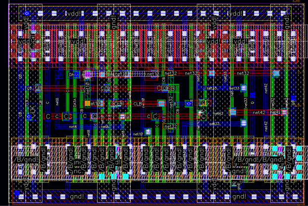

Final-year Electrical and Electronic Engineering student with hands-on experience in IC layout, layout verification, and semiconductor circuit design. Interested in full-custom IC layout, DRC/LVS verification, and high-speed circuit design.
